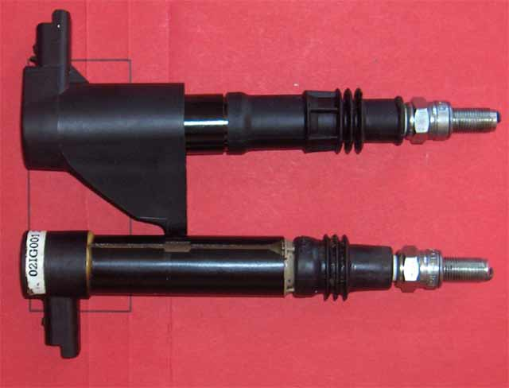
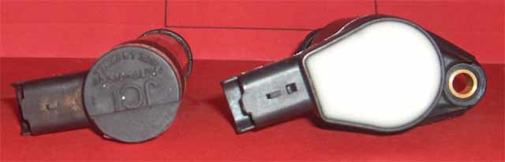
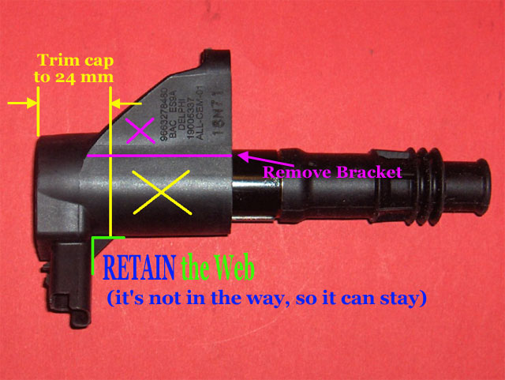
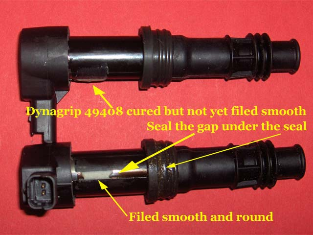
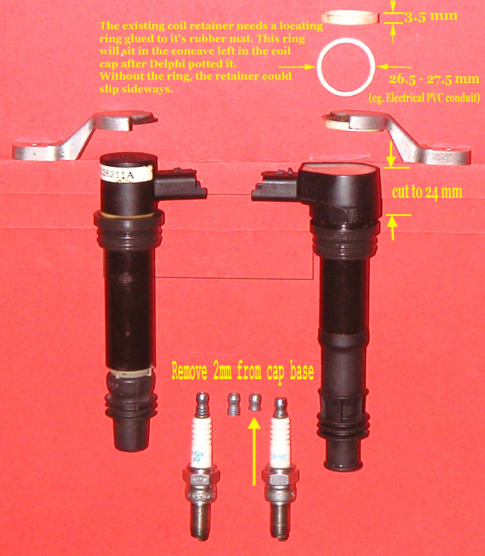

Modifications required for the Delphi Coil
11 Jan 2010

The Delphi coil (top) is similar to the Valeo & OEM (bottom) coils. The connector is the same, as are the plug contact
and seals. Where it differs is in the distance from the plug contact to the base of the connector. The Delphi coil is
2mm longer. The Delphi coil cap is also 2mm shorter than the Valeo / OEM.

The Delphi coil (right)is made with an open cap. Once all the connections are made at the top, the whole unit is potted.
It is this feature that sets this coil apart from all the rest. There is no way that moisture can find its way
into the coil.
The JCI / Valeo / OEM coils are made with an enclosed cap. Once the electrical connections are made, there is no
physical way to pot the coil adequately. There are slots in the side of the cap that aid in the potting process,
but they haven't been used successfully, or at all.

Using a hacksaw (carefully), first remove the mounting bracket, then the web below the connector. Finally, measure
24 mm down from the top, mark all around, cut and remove the lower part of the cap.

There is a gap in the side of the coil that needs to be built up & rounded off, so that the top seal can do its job.
What ever is used to do this, it must cure hard enough to allow filing. Dynagrip 49408 was used here. Epoxy would possibly
work as well, although softer.
The result should allow a small amount of grease to seal the outside of the coil stick, to the inside of the top seal.
More grease on the outside of the top seal completes the task.

As the text in the above picture explains, add a 3.5 - 4.0 mm PVC ring to the retainer, to keep the retainer aligned
to the coil cap. The aluminium edge of the retainer will hold the coil in place, on the spark plug.
Finally, remove 2mm from the plug cap. If this is not done, the coil - plug spring contact will bottom out, creating
the possibility of future coil or plug failure
Fitting hint
The seal to these coil sticks is so good, that air pressure inside the well will push the stick back out of the well!
To get around this, put a piece of straight, smooth, 0.8mm wire, down the well before sliding the sticks into place,
then redraw the wire. The wire introduces a gap through which the pressurised air can escape.
The seal to the plug is just as good, but there's no way to get around it. The retainer must overcome it.
If you cut the wire with wire cutters, smooth off the cut edges with a file, or the edge will mark the seal.
Supplier
I used www.aepdirect.com.
Search for OEM number 597094. The AEP part number is CIT077
Price is GBP 26.27 ex VAT, today, Jan 2010
Ray arranged zero VAT for me, as it was an export for him.
Comment
Alex tried to use these coils on the track, and found they failed in a day.
I installed my set in May 2008 (it's now Jan 2010), at 48,016 km. The current odometer reading is 66,809 km
I rarely rev Nell beyond 9,000 rpm.
You be the judge.